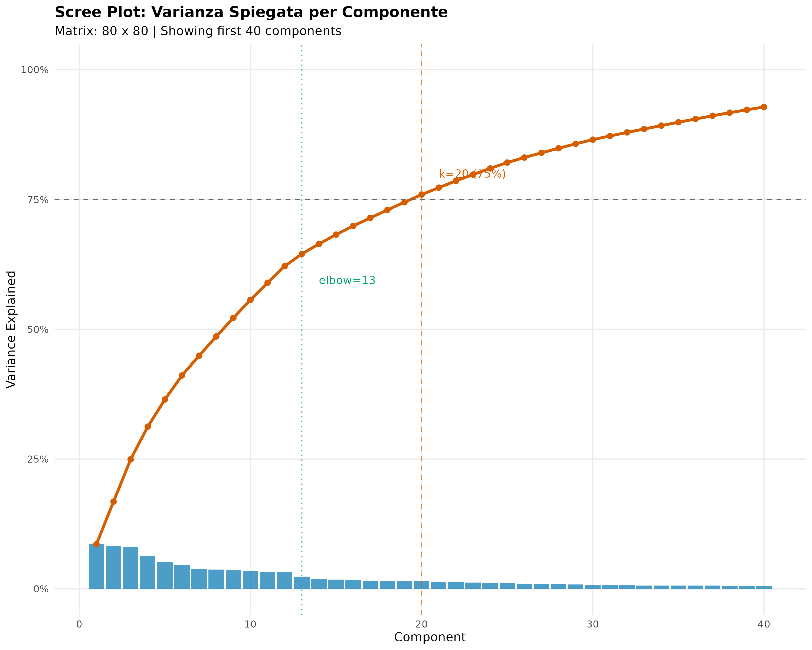
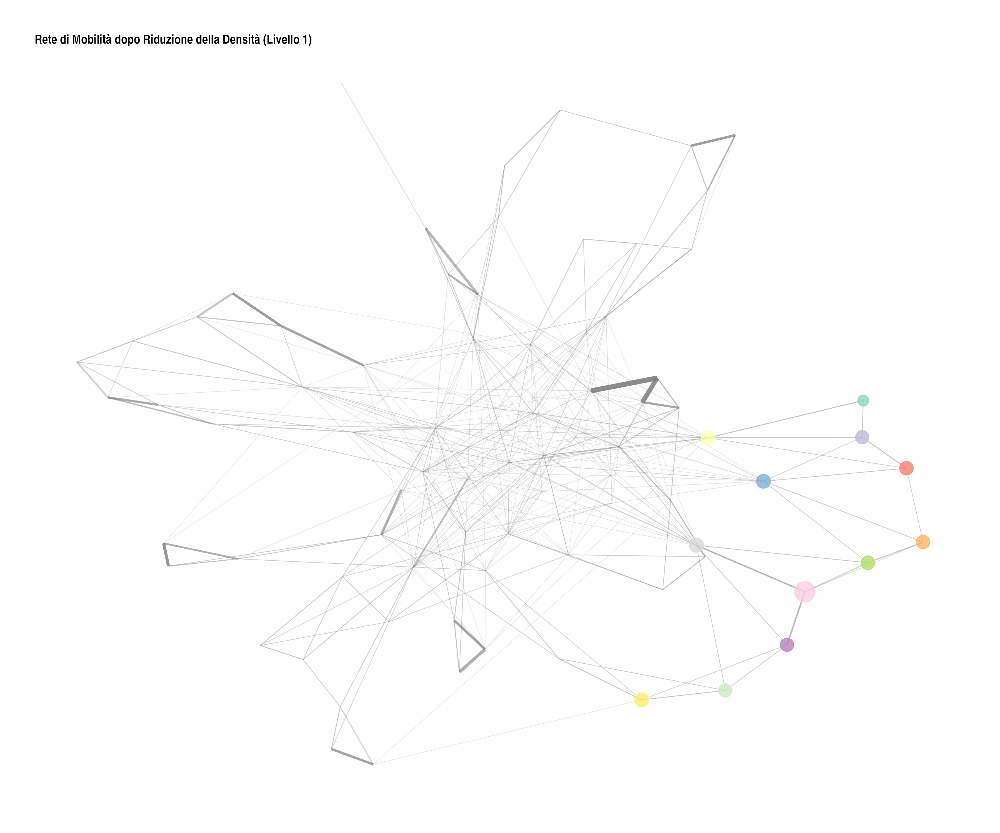
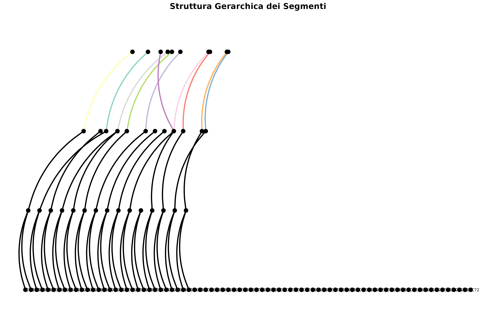

Riduzione della Densità per Matrici di Mobilità di Grandi Dimensioni
Giampaolo Montaletti
2026-02-06
Source:vignettes/reduce_density_guida_it.Rmd
reduce_density_guida_it.Rmd1. Introduzione
1.1 Il problema: densità elevata e complessità computazionale
L’algoritmo MONECA analizza tabelle di mobilità attraverso reti ponderate e cliques per identificare cluster di posizioni con elevata mobilità interna. Questo approccio funziona in modo efficace per matrici con 10-50 categorie, dove i pattern di mobilità sono sufficientemente chiari e il rumore nei dati non oscura le strutture sottostanti.
1.1.1 Cos’è la densità di una matrice
La densità di una matrice è la proporzione di celle con valori diversi da zero rispetto al totale delle celle:
Ad esempio, una matrice 80×80 ha 6.400 celle. Se 4.000 celle contengono valori positivi, la densità è 62.5% (e la sparsità è 37.5%).
1.1.2 Come MONECA costruisce la rete
MONECA costruisce una rete pesata dalla matrice di mobilità attraverso due passaggi:
Calcolo dei rischi relativi: internamente,
moneca()chiamaweight.matrix()per calcolare il rischio relativo (RR) di ogni cella:Filtraggio con cut.off: per default,
weight.matrix()usacut.off = 1, mantenendo solo le celle con (mobilità pari o superiore alle aspettative). Le altre celle vengono escluse dalla rete.
La rete risultante ha: - Ogni categoria come nodo - Ogni cella con RR >= 1 come arco tra due nodi
1.1.3 Due concetti di densità
È importante distinguere due concetti di densità:
- Densità dei conteggi: proporzione di celle con conteggi > 0 nella matrice originale
- Densità della rete: proporzione di celle con RR >= 1 dopo il calcolo dei rischi relativi
La densità della rete è ciò che determina il numero
di archi nel grafo analizzato da MONECA. Il filtraggio interno con
cut.off = 1 è già molto efficace nel ridurre questa
densità.
Esempio tipico: - Densità conteggi: ~80% (molte celle con almeno un’osservazione) - Densità rete: ~10-15% (poche celle con mobilità sopra le aspettative)
1.1.4 Perché la densità della rete incide sui tempi di calcolo
L’algoritmo cerca cliques (sottografi completi) nella rete. Il problema computazionale è che il numero di cliques potenziali cresce in modo combinatoriale con il numero di archi:
- Più celle con RR >= 1 → più archi nella rete
- Più archi → più cliques potenziali da esaminare
- Il tempo di calcolo può crescere esponenzialmente
1.1.5 Problemi delle matrici di grandi dimensioni
Quando si lavora con matrici di mobilità di grandi dimensioni (60+ categorie), emergono problemi specifici:
Rumore statistico: con un numero elevato di categorie, molte celle contengono poche osservazioni, producendo stime instabili dei rischi relativi
Falsi positivi nella rete: celle con pochi conteggi possono avere RR >= 1 per caso, creando archi “rumorosi” nella rete
Esplosione combinatoriale: più archi nella rete significa più cliques potenziali, con tempi di calcolo che possono diventare proibitivi
Difficoltà interpretativa: cluster basati su connessioni deboli (rumore) possono oscurare i pattern di mobilità sostantivi
1.2 Soluzione: preprocessing con reduce_density()
La funzione reduce_density() opera sui
conteggi della matrice prima che
MONECA calcoli i rischi relativi. L’obiettivo è rimuovere il rumore
statistico per ottenere rischi relativi più stabili.
Workflow:
matrice_grezza -> reduce_density() -> moneca()
↓
(internamente chiama weight.matrix)Importante: reduce_density() non agisce
direttamente sulla densità della rete (celle con RR >= 1), ma
modifica i conteggi. L’effetto sulla rete dipende da come questa
modifica influenza il calcolo dei rischi relativi.
1.2.1 Effetto dei due metodi sulla densità della rete
Entrambi i metodi (SVD e NMF) utilizzano un approccio basato su filtro:
Approccio unificato (SVD e NMF):
- Calcolano una ricostruzione a basso rango della matrice
- Usano i valori di ricostruzione come criterio di filtro per identificare celle significative
- Preservano i valori originali delle celle che superano la soglia (nessuna distorsione)
- Azzerano le celle considerate rumore (valori di ricostruzione sotto la soglia)
- Riducono efficacemente la densità della rete
Differenze tra SVD e NMF:
- SVD: più veloce, usa varianza spiegata per selezionare k automaticamente
-
NMF: componenti interpretabili come pattern latenti
di mobilità, richiede
RcppML - Entrambi usano il parametro
filter_quantileper controllare la selezione delle celle
1.2.2 Quando usare reduce_density()
Il filtraggio interno di MONECA (cut.off = 1) è già
efficace nel ridurre la densità della rete. L’uso di
reduce_density() è utile quando:
- La matrice è molto grande (100+ categorie) e il calcolo è lento
- Si vuole rimuovere rumore statistico prima del calcolo dei rischi relativi
- Si vogliono preservare i conteggi originali delle celle significative (entrambi i metodi preservano i valori originali)
-
Si vuole ridurre la densità della rete in modo
controllato tramite il parametro
filter_quantile
2. Fondamenti Matematici
2.1 Decomposizione ai Valori Singolari (SVD)
La Singular Value Decomposition (SVD) è una tecnica di fattorizzazione matriciale che decompone una matrice (dimensioni ) nel prodotto di tre matrici:
dove:
- : matrice ortogonale (vettori singolari sinistri)
- : matrice diagonale con valori singolari
- : matrice ortogonale trasposta (vettori singolari destri)
2.1.1 Interpretazione geometrica
I valori singolari rappresentano l’importanza delle diverse componenti nella struttura della matrice. I primi valori singolari catturano la maggior parte della variabilità, mentre gli ultimi corrispondono principalmente a rumore.
2.1.2 Riduzione dimensionale tramite SVD troncata
La SVD troncata a componenti () ricostruisce la matrice mantenendo solo le prime componenti:
dove , , e contengono solo le prime colonne/righe.
Proprietà della SVD troncata:
- Fornisce la migliore approssimazione a basso rango di in termini di norma di Frobenius
- La varianza spiegata dalla componente è proporzionale a
- La varianza cumulativa spiegata dalle prime componenti è:
2.1.3 Come la SVD riduce la densità
Nella funzione reduce_density(), la SVD utilizza un
approccio di filtraggio simile a NMF:
- Ricostruzione a basso rango: usando solo componenti, si ottiene una matrice ricostruita che rappresenta i pattern dominanti
- Clipping dei negativi: eventuali valori negativi prodotti dalla ricostruzione vengono impostati a zero per il calcolo della soglia
-
Selezione via quantile: le celle con valori di
ricostruzione sotto una certa soglia (determinata dal parametro
filter_quantile) vengono considerate rumore - Preservazione dei valori originali: per le celle identificate come significative, vengono mantenuti i valori originali della matrice, non i valori ricostruiti
Il risultato è una matrice con meno celle non-zero: le connessioni deboli (rumore) vengono azzerate, mentre le connessioni forti (segnale) mantengono i loro valori originali intatti.
2.1.4 Vantaggi e limitazioni della SVD
Vantaggi:
- Computazionalmente efficiente (libreria
irlbaper SVD troncata) - Soluzione ottimale per approssimazione a basso rango
- Varianza spiegata facilmente interpretabile
- Preserva i valori originali delle celle significative (approccio filtro)
- Parametro
filter_quantileregolabile per controllare la selezione
Limitazioni:
- Il processo di filtraggio si basa su valori di ricostruzione che possono includere negativi (corretti prima del calcolo della soglia)
- La selezione del quantile può richiedere calibrazione per casi specifici
2.2 Fattorizzazione a Matrici Non-Negative (NMF)
La Non-negative Matrix Factorization (NMF) decompone una matrice non-negativa nel prodotto di due matrici non-negative:
dove:
- : matrice (matrice delle basi)
- : matrice (matrice dei coefficienti)
- Tutte le entrate di e sono
2.2.1 Interpretazione per dati di mobilità
La NMF ha un’interpretazione naturale per matrici di mobilità:
- : rappresenta pattern di mobilità latenti (profili di origine)
- : rappresenta i pesi di questi pattern per ciascuna destinazione
- Il vincolo di non-negatività preserva l’interpretabilità dei conteggi
2.2.2 NMF come filtro nella funzione reduce_density()
A differenza della SVD, che sostituisce i valori originali con una
ricostruzione a basso rango, nella funzione
reduce_density() la NMF viene utilizzata come
filtro per identificare celle significative:
- Calcolo della ricostruzione: La decomposizione produce una matrice ricostruita che rappresenta i pattern dominanti di mobilità
- Identificazione delle celle significative: I valori di ricostruzione indicano quanto una cella contribuisce ai pattern latenti identificati dalla NMF
-
Selezione via quantile: Le celle con valori di
ricostruzione sotto una certa soglia (determinata dal parametro
filter_quantile) vengono considerate rumore - Preservazione dei valori originali: Per le celle identificate come significative, vengono mantenuti i valori originali della matrice, non i valori ricostruiti
Questo approccio offre un vantaggio rispetto alla ricostruzione diretta: i conteggi nella matrice risultante sono esattamente quelli osservati nei dati originali, senza distorsioni introdotte dalla ricostruzione. Le celle considerate rumore vengono semplicemente azzerate.
2.2.3 Come la NMF riduce la densità
La NMF riduce la densità attraverso un approccio di filtraggio selettivo:
- Analisi dei pattern latenti: la decomposizione identifica pattern dominanti di mobilità
- Valutazione delle celle: ogni cella riceve un “punteggio di ricostruzione” che indica quanto contribuisce ai pattern identificati
- Separazione segnale/rumore: le celle con punteggi bassi contribuiscono poco ai pattern dominanti e sono considerate rumore
-
Azzeramento del rumore: le celle sotto la soglia
filter_quantilevengono impostate a zero
Il risultato è una matrice più sparsa dove: - Le celle significative mantengono i loro valori originali (nessuna distorsione) - Le celle rumorose sono azzerate (rimosse dalla rete)
Questo riduce il numero di archi nella rete MONECA, accelerando il calcolo delle cliques.
2.2.4 Algoritmo di ottimizzazione
La NMF non ha una soluzione analitica chiusa. L’algoritmo standard minimizza la distanza tra e attraverso aggiornamenti iterativi.
La funzione reduce_density() utilizza il pacchetto
RcppML, che implementa algoritmi efficienti di NMF.
2.2.5 Vantaggi e limitazioni della NMF (approccio filtro)
Vantaggi:
- Preserva i valori originali dei conteggi (nessuna distorsione)
- Utilizza NMF per rilevamento intelligente del rumore
- Componenti interpretabili per identificare pattern significativi
- Parametro
filter_quantileregolabile per controllare la selezione
Limitazioni:
- Più lenta della SVD (ottimizzazione iterativa)
- Richiede inizializzazione casuale (necessario specificare
seedper riproducibilità) - Non ha una metrica diretta di “varianza spiegata”
- La selezione del quantile può richiedere calibrazione per casi specifici
2.3 Normalizzazioni pre-processing
Prima di applicare SVD o NMF, è possibile trasformare la matrice di mobilità per enfatizzare aspetti specifici.
2.3.1 Nessuna normalizzazione
(normalization = "none")
Utilizza i conteggi grezzi. Adatta quando:
- Le dimensioni marginali non introducono distorsioni sistematiche
- Si vuole preservare l’informazione sulle frequenze assolute
- La matrice è già ragionevolmente bilanciata
2.3.2 Residui di Pearson
(normalization = "pearson")
Standardizza per gli effetti marginali calcolando i residui di Pearson:
dove sono i conteggi osservati e sono i conteggi attesi sotto indipendenza.
Utilizzo: enfatizza deviazioni dal modello di indipendenza, utile quando le distribuzioni marginali sono eterogenee.
2.3.3 PPMI - Positive Pointwise Mutual Information
(normalization = "ppmi")
Calcola la mutua informazione puntuale positiva:
dove:
- (probabilità congiunta)
- (probabilità marginale origine)
- (probabilità marginale destinazione)
Interpretazione: valori positivi indicano mobilità superiore a quanto atteso per caso; valori zero indicano mobilità sotto le aspettative o assente.
Utilizzo: enfatizza connessioni di mobilità sorprendenti rispetto alla casualità, utile per identificare cluster basati su affinità strutturali piuttosto che su frequenze assolute.
3. La Funzione reduce_density()
3.1 Sintassi e parametri
reduce_density(
mx,
method = c("svd", "nmf"),
normalization = c("none", "pearson", "ppmi"),
k = "auto",
variance_target = 0.75,
threshold = NULL,
threshold_type = c("sd", "percentile"),
verbose = FALSE,
seed = NULL,
filter_quantile = "auto"
)3.1.1 Parametri obbligatori
mx: matrice di mobilità in formato
standard moneca (con riga e colonna dei totali). Deve essere quadrata e
contenere almeno 4 categorie (5 righe inclusi i totali).
3.1.2 Parametri del metodo di riduzione
method: metodo di riduzione
dimensionale da utilizzare.
-
"svd"(default): Singular Value Decomposition. Veloce, efficiente in memoria, usa la varianza spiegata per selezionare k automaticamente. Consigliata come prima scelta. -
"nmf": Non-negative Matrix Factorization. Componenti interpretabili come pattern latenti di mobilità. Richiede il pacchettoRcppML.
filter_quantile: parametro che si
applica a entrambi i metodi (SVD e NMF). Controlla la proporzione di
celle da mantenere.
-
"auto"(default): selezione automatica basata sul rilevamento del gomito (elbow) sui valori di ricostruzione ordinati - numerico (0-1): proporzione di celle da mantenere. Es.
0.75mantiene il 75% delle celle con i valori di ricostruzione più alti
Nota importante: Entrambi i metodi (SVD e NMF) usano i valori di ricostruzione solo per identificare quali celle sono significative (segnale vs rumore), ma restituiscono i valori originali per quelle celle. Questo preserva l’interpretabilità dei conteggi senza introdurre distorsioni.
normalization: trasformazione
pre-processing da applicare.
-
"none"(default): nessuna normalizzazione, utilizza conteggi grezzi -
"pearson": residui di Pearson, standardizza per effetti marginali -
"ppmi": Positive Pointwise Mutual Information, enfatizza mobilità sopra il caso
3.1.3 Parametri per la selezione delle componenti
k: numero di componenti da
mantenere.
-
"auto"(default): selezione automatica basata su varianza spiegata e rilevamento del gomito (elbow) - intero positivo: specifica manualmente il numero di componenti (tipicamente 15-25 per matrici 60+)
variance_target: valore numerico (0-1)
che specifica la varianza cumulativa target quando
k = "auto". Default 0.75 (75%). Valori più
alti mantengono più dettaglio ma anche più rumore.
3.1.4 Parametri di post-processing
threshold: soglia opzionale per
aumentare la sparsità.
-
NULL(default): nessuna soglia applicata -
"auto": soglia automatica (media + 1 deviazione standard) - numerico: valori sotto questa soglia vengono impostati a zero
threshold_type: interpretazione della
soglia numerica.
-
"sd"(default): numero di deviazioni standard sopra la media -
"percentile": soglia percentile (0-100)
3.2 Valore restituito
La funzione restituisce un oggetto di classe
"density_reduced" (eredita da "matrix") con i
seguenti attributi:
-
method: metodo di riduzione utilizzato (“svd” o “nmf”) -
normalization: metodo di normalizzazione applicato -
k: numero di componenti mantenute -
variance_explained: proporzione di varianza spiegata (solo per SVD) -
filter_quantile: quantile di filtro utilizzato (entrambi i metodi) - indica la proporzione di celle mantenute basata sui valori di ricostruzione -
threshold_applied: valore di soglia applicato (se presente) -
original_dims: dimensioni della matrice originale (senza totali) -
original_total: totale delle osservazioni originali -
reduced_total: totale delle osservazioni dopo riduzione
L’oggetto può essere stampato direttamente per visualizzare un riepilogo delle operazioni eseguite.
3.3 Pipeline di elaborazione
La funzione esegue i seguenti passaggi:
- Validazione input: verifica formato matrice ed estrae la matrice core (escludendo riga/colonna totali)
- Normalizzazione: applica opzionalmente trasformazioni PPMI o residui di Pearson
-
Selezione componenti: quando
k = "auto", usa varianza spiegata con rilevamento del gomito - Riduzione dimensionale: applica SVD o NMF per estrarre pattern dominanti
- Ricostruzione: ricostruisce la matrice dalle componenti ridotte
-
Filtraggio: usa i valori di ricostruzione come
soglia per identificare celle significative. Le celle con valori di
ricostruzione sotto la soglia (
filter_quantile) vengono azzerate. I valori originali vengono preservati per le celle che passano il filtro. - Soglia opzionale: imposta valori bassi a zero se richiesto (threshold aggiuntivo)
- Ricalcolo totali: aggiorna riga e colonna dei totali
4. Esempi Pratici
4.1 Preparazione dei dati di esempio
# Genera una matrice di mobilità di grandi dimensioni (80 classi)
set.seed(123)
large_data <- generate_mobility_data(
n_classes = 80,
n_total = 100000,
immobility_strength = 0.65,
class_clustering = 0.25,
noise_level = 0.15,
class_names = paste0("C", sprintf("%02d", 1:80)),
seed = 123
)
# Informazioni sulla matrice
cat("Dimensioni matrice:", dim(large_data), "\n")
#> Dimensioni matrice: 81 81
cat("Totale osservazioni:", large_data[81, 81], "\n")
#> Totale osservazioni: 1e+05
cat("Celle non-zero:", sum(large_data[1:80, 1:80] > 0), "su", 80*80, "\n")
#> Celle non-zero: 4885 su 6400
cat("Sparsità:", round(100 * sum(large_data[1:80, 1:80] == 0) / (80*80), 1), "%\n")
#> Sparsità: 23.7 %4.2 Visualizzazione dello scree plot
Prima di applicare la riduzione, è utile visualizzare la varianza spiegata per componente per capire quante componenti sono necessarie.
# Crea lo scree plot
p_scree <- plot_scree(
large_data,
max_components = 40,
variance_target = 0.75,
show_elbow = TRUE,
title = "Scree Plot: Varianza Spiegata per Componente"
)
print(p_scree)
Interpretazione dello scree plot:
- Barre blu: varianza spiegata da ciascuna componente individuale
- Linea rossa: varianza cumulativa spiegata
- Linea tratteggiata orizzontale: target di varianza (75% in questo caso)
- Linea verticale rossa: numero di componenti necessarie per raggiungere il target
- Linea verticale verde: punto di gomito rilevato automaticamente
Lo scree plot mostra che le prime componenti catturano la maggior parte della varianza, mentre le componenti successive contribuiscono progressivamente meno. Il punto di gomito indica dove il beneficio marginale di aggiungere componenti diventa trascurabile.
4.3 Esempio 1: Riduzione base con SVD e selezione automatica di k
# Riduzione base con parametri di default
reduced_basic <- reduce_density(
large_data,
method = "svd",
normalization = "none",
k = "auto",
variance_target = 0.75,
verbose = TRUE,
seed = 42
)
# Visualizza il risultato
print(reduced_basic)
#> Density-Reduced Mobility Matrix
#> ================================
#> Dimensions: 80 x 80 categories
#> Method: svd
#> Normalization: none
#> Components (k): 16
#> Variance explained: 75.3%
#> Filter quantile: 25.0% (keeps top cells by reconstruction)
#> Observations: 100000 -> 80086 (80.1% retained)
#>
#> Core matrix preview (first 5x5):
#> C01 C02 C03 C04 C05
#> C01 465 99 49 1 0
#> C02 286 1467 286 172 0
#> C03 4 17 62 10 6
#> C04 3 73 149 683 140
#> C05 0 0 163 339 1866Cosa è successo:
- La funzione ha estratto la matrice core 80×80 (escludendo i totali)
- Ha calcolato la SVD per determinare automaticamente k
- Ha selezionato il numero di componenti che spiegano il 75% della varianza
- Ha ricostruito la matrice mantenendo solo queste componenti
- Ha arrotondato i valori a interi e ricalcolato i totali
Interpretazione del risultato:
- Il numero di componenti selezionate (k) bilancia la preservazione della struttura con la riduzione del rumore
- La percentuale di varianza spiegata indica quanto della variabilità originale è stata mantenuta
- La percentuale di osservazioni mantenute mostra l’effetto dell’arrotondamento e della rimozione di rumore
4.4 Esempio 2: Riduzione con normalizzazione PPMI
La normalizzazione PPMI è utile quando si vogliono enfatizzare le connessioni di mobilità che superano le aspettative casuali, indipendentemente dalla frequenza assoluta.
# Riduzione con PPMI
reduced_ppmi <- reduce_density(
large_data,
method = "svd",
normalization = "ppmi",
k = "auto",
variance_target = 0.80, # Target più alto per preservare più struttura
verbose = TRUE,
seed = 42
)
print(reduced_ppmi)
#> Density-Reduced Mobility Matrix
#> ================================
#> Dimensions: 80 x 80 categories
#> Method: svd
#> Normalization: ppmi
#> Components (k): 18
#> Variance explained: 81.2%
#> Filter quantile: 25.0% (keeps top cells by reconstruction)
#> Observations: 100000 -> 88909 (88.9% retained)
#>
#> Core matrix preview (first 5x5):
#> C01 C02 C03 C04 C05
#> C01 465 99 49 1 2
#> C02 286 1467 286 172 2
#> C03 4 17 62 10 6
#> C04 3 73 149 683 140
#> C05 1 6 163 339 1866Confronto con la riduzione base:
# Confronta le dimensioni ridotte
cat("Riduzione base (none):\n")
#> Riduzione base (none):
cat(" k =", attr(reduced_basic, "k"), "\n")
#> k = 16
cat(" Varianza spiegata =",
round(attr(reduced_basic, "variance_explained") * 100, 1), "%\n\n")
#> Varianza spiegata = 75.3 %
cat("Riduzione PPMI:\n")
#> Riduzione PPMI:
cat(" k =", attr(reduced_ppmi, "k"), "\n")
#> k = 18
cat(" Varianza spiegata =",
round(attr(reduced_ppmi, "variance_explained") * 100, 1), "%\n")
#> Varianza spiegata = 81.2 %Differenze attese:
- La normalizzazione PPMI trasforma i dati prima della SVD, enfatizzando pattern di co-occorrenza
- Il numero di componenti necessarie potrebbe differire
- La matrice ricostruita enfatizza mobilità “sorprendente” rispetto al caso
4.5 Esempio 3: Riduzione con NMF (approccio filtro)
La NMF utilizza un approccio diverso dalla SVD: invece di sostituire i valori con una ricostruzione, la NMF identifica le celle significative e preserva i valori originali.
# Riduzione con NMF - selezione automatica del quantile
reduced_nmf <- reduce_density(
large_data,
method = "nmf",
normalization = "none",
k = 20, # Specifica k manualmente per NMF
filter_quantile = "auto", # Selezione automatica via elbow detection
verbose = TRUE,
seed = 42
)
print(reduced_nmf)
#> Density-Reduced Mobility Matrix
#> ================================
#> Dimensions: 80 x 80 categories
#> Method: nmf
#> Normalization: none
#> Components (k): 20
#> Filter quantile: 25.0% (keeps top cells by reconstruction)
#> Observations: 100000 -> 84774 (84.8% retained)
#>
#> Core matrix preview (first 5x5):
#> C01 C02 C03 C04 C05
#> C01 465 99 49 1 0
#> C02 286 1467 286 172 0
#> C03 4 17 62 10 6
#> C04 3 73 149 683 140
#> C05 0 0 163 339 1866Come funziona l’approccio NMF filtro:
L’output verbose mostra informazioni sul processo di filtraggio:
- “Auto quantile selection: keep top X% of cells” indica la proporzione di celle selezionate automaticamente
- “NMF filter: keeping N/M cells (X%)” mostra quante celle sono state mantenute
- I valori nella matrice risultante sono i conteggi originali, non valori ricostruiti
Specifica manuale del quantile:
# Riduzione con quantile specificato manualmente
reduced_nmf_75 <- reduce_density(
large_data,
method = "nmf",
k = 20,
filter_quantile = 0.75, # Mantieni il 75% delle celle più significative
verbose = TRUE,
seed = 42
)
# Il filter_quantile viene salvato come attributo
cat("Filter quantile utilizzato:", attr(reduced_nmf_75, "filter_quantile"), "\n")
#> Filter quantile utilizzato: 0.75Note sulla NMF:
- Richiede il pacchetto
RcppML(install.packages("RcppML")) - Preserva i valori originali dei conteggi (nessuna distorsione)
- Il parametro
filter_quantilecontrolla la selezione: valori più alti mantengono più celle - L’argomento
seedè essenziale per la riproducibilità - Specificare
kmanualmente è spesso preferibile per NMF
4.6 Esempio 4: Riduzione con soglia per aumentare la sparsità
L’applicazione di una soglia può rimuovere ulteriormente valori bassi che potrebbero rappresentare rumore.
# Riduzione con soglia automatica
reduced_sparse <- reduce_density(
large_data,
method = "svd",
k = "auto",
variance_target = 0.75,
threshold = "auto", # Soglia automatica: media + 1 SD
verbose = TRUE,
seed = 42
)
print(reduced_sparse)
#> Density-Reduced Mobility Matrix
#> ================================
#> Dimensions: 80 x 80 categories
#> Method: svd
#> Normalization: none
#> Components (k): 16
#> Variance explained: 75.3%
#> Filter quantile: 25.0% (keeps top cells by reconstruction)
#> Threshold applied: 108.56
#> Observations: 100000 -> 66974 (67.0% retained)
#>
#> Core matrix preview (first 5x5):
#> C01 C02 C03 C04 C05
#> C01 465 0 0 0 0
#> C02 286 1467 286 172 0
#> C03 0 0 0 0 0
#> C04 0 0 149 683 140
#> C05 0 0 163 339 1866
# Confronta la sparsità
sparsity_original <- sum(large_data[1:80, 1:80] == 0) / (80*80)
sparsity_basic <- sum(reduced_basic[1:80, 1:80] == 0) / (80*80)
sparsity_sparse <- sum(reduced_sparse[1:80, 1:80] == 0) / (80*80)
cat("\nConfronto sparsità:\n")
#>
#> Confronto sparsità:
cat(" Originale:", round(sparsity_original * 100, 1), "%\n")
#> Originale: 23.7 %
cat(" Riduzione base:", round(sparsity_basic * 100, 1), "%\n")
#> Riduzione base: 77.2 %
cat(" Con soglia:", round(sparsity_sparse * 100, 1), "%\n")
#> Con soglia: 97.6 %Effetto della soglia:
- La soglia rimuove valori bassi che possono rappresentare rumore
- Aumenta la sparsità della matrice
- Può migliorare l’identificazione di cluster nella successiva analisi MONECA
4.7 Esempio 5: Riduzione con soglia personalizzata
# Soglia basata su deviazioni standard
reduced_sd <- reduce_density(
large_data,
method = "svd",
k = "auto",
threshold = 1.5, # 1.5 deviazioni standard sopra la media
threshold_type = "sd",
verbose = TRUE,
seed = 42
)
# Soglia basata su percentile
reduced_percentile <- reduce_density(
large_data,
method = "svd",
k = "auto",
threshold = 25, # Mantieni solo valori sopra il 25° percentile
threshold_type = "percentile",
verbose = TRUE,
seed = 42
)
cat("Soglia SD:", attr(reduced_sd, "threshold_applied"), "\n")
#> Soglia SD: 156.576
cat("Soglia percentile:", attr(reduced_percentile, "threshold_applied"), "\n")
#> Soglia percentile: 05. Integrazione con il Workflow MONECA
5.1 Pipeline completa: da riduzione ad analisi
# 1. Riduzione della densità
reduced <- reduce_density(
large_data,
method = "svd",
normalization = "none",
k = "auto",
variance_target = 0.75,
verbose = FALSE,
seed = 42
)
# 2. Analisi MONECA sulla matrice ridotta
seg <- moneca(
reduced,
segment.levels = 3,
small.cell.reduction = 200
)
#> | | | 0% | |== | 3% | |===== | 6% | |======= | 10% | |========= | 13% | |=========== | 16% | |============== | 19% | |================ | 23%
#> 25% ready!
#> | |================== | 26% | |==================== | 29% | |======================= | 32% | |========================= | 35% | |=========================== | 39% | |============================= | 42% | |================================ | 45% | |================================== | 48%
#> 50% ready!
#> | |==================================== | 52% | |====================================== | 55% | |========================================= | 58% | |=========================================== | 61% | |============================================= | 65% | |=============================================== | 68% | |================================================== | 71% | |==================================================== | 74%
#> 75% ready!
#> | |====================================================== | 77% | |======================================================== | 81% | |=========================================================== | 84% | |============================================================= | 87% | |=============================================================== | 90% | |================================================================= | 94% | |==================================================================== | 97% | |======================================================================| 100%
#> 100% ready!
#>
#> | | | 0% | |=== | 4% | |====== | 9% | |========= | 13% | |============ | 17% | |=============== | 22%
#> 25% ready!
#> | |================== | 26% | |===================== | 30% | |======================== | 35% | |=========================== | 39% | |============================== | 43% | |================================= | 48%
#> 50% ready!
#> | |===================================== | 52% | |======================================== | 57% | |=========================================== | 61% | |============================================== | 65% | |================================================= | 70% | |==================================================== | 74%
#> 75% ready!
#> | |======================================================= | 78% | |========================================================== | 83% | |============================================================= | 87% | |================================================================ | 91% | |=================================================================== | 96% | |======================================================================| 100%
#> 100% ready!
#>
#> | | | 0% | |==== | 6% | |======== | 12% | |============ | 18% | |================ | 24%
#> 28% ready!
#> | |===================== | 29% | |========================= | 35% | |============================= | 41% | |================================= | 47%
#> 50% ready!
#> | |===================================== | 53% | |========================================= | 59% | |============================================= | 65% | |================================================= | 71% | |====================================================== | 76%
#> 78% ready!
#> | |========================================================== | 82% | |============================================================== | 88% | |================================================================== | 94% | |======================================================================| 100%
#> 100% ready!
# 3. Visualizza i risultati
print(seg)
#>
#> ================================================================================
#> moneca MOBILITY ANALYSIS RESULTS
#> ================================================================================
#>
#> OVERALL MOBILITY PATTERNS
#> -------------------------------------------------------------------------------
#> Overall Population Mobility Rate: 40.0%
#> Average Mobility Concentration (all levels): 94.2%
#>
#> HIERARCHICAL SEGMENTATION ANALYSIS
#> -------------------------------------------------------------------------------
#>
#> Internal Mobility Within Segments (%):
#> Level 1 Level 2 Level 3 Level 4
#> 60.0 67.5 76.0 82.0
#>
#> Mobility Concentration in Significant Pathways by Level (%):
#> Level 1 Level 2 Level 3 Level 4
#> 95.3 94.8 94.6 92.2
#>
#> Network Structure by Level:
#> Level 1 Level 2 Level 3 Level 4
#> -------------------------------------------------------------------------------
#> Active Segments/Classes: 80 65 51 41
#> Significant Edges: 34 34 27 14
#> Network Density: 0.005 0.008 0.011 0.009
#> Isolated Segments: 38 31 24 24
#>
#> DETAILED WEIGHTED DEGREE DISTRIBUTIONS (STRENGTH)
#> -------------------------------------------------------------------------------
#>
#> Total Weighted Connections (Strength In + Out):
#> Min Q1 Median Mean Q3 Max
#> Level 1 0 0 4.73 6.37 11.19 25.77
#> Level 2 0 0 5.12 5.61 10.10 19.05
#> Level 3 0 0 3.16 3.82 7.16 13.54
#> Level 4 0 0 0.00 2.39 3.46 11.22
#>
#> Outward Mobility Strength (Weighted Out-Degree):
#> Min Q1 Median Mean Q3 Max
#> Level 1 0 0 0 3.19 0.00 25.00
#> Level 2 0 0 0 2.81 5.43 14.87
#> Level 3 0 0 0 1.91 3.30 10.77
#> Level 4 0 0 0 1.19 1.29 10.75
#>
#> Inward Mobility Strength (Weighted In-Degree):
#> Min Q1 Median Mean Q3 Max
#> Level 1 0 0 0 3.19 6.38 16.74
#> Level 2 0 0 0 2.81 5.39 11.76
#> Level 3 0 0 0 1.91 4.01 9.75
#> Level 4 0 0 0 1.19 1.60 10.75
#>
#> Edge Weight Distribution (Relative Risk Values):
#> Min Q1 Median Mean Q3 Max
#> Level 1 3.25 5.93 6.83 7.50 8.83 16.74
#> Level 2 2.35 3.71 5.07 5.37 6.51 11.76
#> Level 3 1.36 1.95 3.16 3.61 4.33 9.75
#> Level 4 1.09 1.70 2.84 3.50 3.81 10.75
#>
#> ================================================================================5.2 Confronto: con e senza riduzione
# Analisi senza riduzione (potrebbe essere computazionalmente onerosa)
# NOTA: con 80 classi, questo può richiedere molto tempo
# seg_original <- moneca(large_data, segment.levels = 3)
# Analisi con riduzione (già calcolata)
seg_reduced <- seg
# Visualizza la qualità dei segmenti
quality_reduced <- segment.quality(seg_reduced)
print(quality_reduced)
#> Membership 1: Segment 1: within.mobility 1: share.of.mobility 1: Density
#> C77 4.10 77 0.653 0.031 NaN
#> C76 4.10 76 0.461 0.011 NaN
#> C78 4.10 78 0.493 0.013 NaN
#> C80 4.10 80 0.762 0.036 NaN
#> C79 4.10 79 0.567 0.017 NaN
#> C49 4.3 49 0.682 0.040 NaN
#> C50 4.3 50 0.249 0.007 NaN
#> C54 4.6 54 0.613 0.025 NaN
#> C53 4.6 53 0.537 0.015 NaN
#> C52 4.6 52 0.627 0.018 NaN
#> C48 4.3 48 0.451 0.011 NaN
#> C47 4.3 47 0.631 0.017 NaN
#> C51 4.6 51 0.595 0.016 NaN
#> C14 4.7 14 0.671 0.028 NaN
#> C15 4.7 15 0.608 0.023 NaN
#> C16 4.7 16 0.553 0.013 NaN
#> C13 4.7 13 0.444 0.010 NaN
#> C05 4.4 5 0.682 0.034 NaN
#> C04 4.4 4 0.558 0.015 NaN
#> C06 4.4 6 0.632 0.018 NaN
#> C07 4.4 7 0.295 0.006 NaN
#> C28 4.5 28 0.622 0.021 NaN
#> C29 4.5 29 0.639 0.019 NaN
#> C30 4.5 30 0.597 0.013 NaN
#> C31 4.5 31 0.638 0.015 NaN
#> C68 4.8 68 0.641 0.025 NaN
#> C67 4.8 67 0.603 0.017 NaN
#> C69 4.8 69 0.601 0.018 NaN
#> C66 4.8 66 0.489 0.007 NaN
#> C09 4.2 9 0.667 0.026 NaN
#> C08 4.2 8 0.000 0.003 NaN
#> C10 4.2 10 0.621 0.017 NaN
#> C11 4.2 11 0.627 0.018 NaN
#> C35 4.9 35 0.667 0.026 NaN
#> C36 4.9 36 0.348 0.007 NaN
#> C34 4.9 34 0.587 0.012 NaN
#> C33 4.9 33 0.596 0.011 NaN
#> C59 4.1 59 0.674 0.019 NaN
#> C58 4.1 58 0.515 0.008 NaN
#> C60 4.1 60 0.638 0.013 NaN
#> C61 4.1 61 0.403 0.005 NaN
#> C55 3.11 55 0.667 0.039 NaN
#> C56 3.11 56 0.467 0.011 NaN
#> C57 3.11 57 0.439 0.007 NaN
#> C75 3.3 75 0.651 0.028 NaN
#> C74 3.3 74 0.457 0.009 NaN
#> C73 3.3 73 0.603 0.015 NaN
#> C27 3.12 27 0.680 0.021 NaN
#> C26 3.12 26 0.572 0.012 NaN
#> C25 3.12 25 0.667 0.010 NaN
#> C02 3.2 2 0.709 0.026 NaN
#> C03 3.2 3 0.148 0.005 NaN
#> C01 3.2 1 0.659 0.009 NaN
#> C37 1.37 37 0.653 0.016 NaN
#> C12 1.12 12 0.584 0.014 NaN
#> C71 1.71 71 0.680 0.013 NaN
#> C64 1.64 64 0.883 0.012 NaN
#> C70 1.70 70 0.551 0.011 NaN
#> C17 1.17 17 0.581 0.009 NaN
#> C32 1.32 32 0.000 0.003 NaN
#> C46 1.46 46 0.000 0.003 NaN
#> C18 1.18 18 0.000 0.002 NaN
#> C24 1.24 24 0.000 0.002 NaN
#> C38 1.38 38 0.000 0.002 NaN
#> C65 1.65 65 0.000 0.002 NaN
#> C72 1.72 72 0.000 0.002 NaN
#> C20 1.20 20 0.000 0.001 NaN
#> C39 1.39 39 0.000 0.001 NaN
#> C40 1.40 40 0.000 0.001 NaN
#> C41 1.41 41 0.000 0.001 NaN
#> C42 1.42 42 0.000 0.001 NaN
#> C62 1.62 62 0.000 0.001 NaN
#> C63 1.63 63 0.000 0.001 NaN
#> C19 1.19 19 0.000 0.000 NaN
#> C21 1.21 21 0.000 0.000 NaN
#> C22 1.22 22 0.000 0.000 NaN
#> C23 1.23 23 0.000 0.000 NaN
#> C43 1.43 43 0.000 0.000 NaN
#> C44 1.44 44 0.000 0.000 NaN
#> C45 1.45 45 0.000 0.000 NaN
#> 1: Nodes 1: Max.path 1: share.of.total 2: Segment 2: within.mobility
#> C77 1 0 0.031 10 0.722
#> C76 1 0 0.011 10 0.722
#> C78 1 0 0.013 NA NA
#> C80 1 0 0.036 11 0.843
#> C79 1 0 0.017 11 0.843
#> C49 1 0 0.040 7 0.728
#> C50 1 0 0.007 7 0.728
#> C54 1 0 0.025 15 0.692
#> C53 1 0 0.015 15 0.692
#> C52 1 0 0.018 NA NA
#> C48 1 0 0.011 NA NA
#> C47 1 0 0.017 NA NA
#> C51 1 0 0.016 NA NA
#> C14 1 0 0.028 6 0.771
#> C15 1 0 0.023 6 0.771
#> C16 1 0 0.013 NA NA
#> C13 1 0 0.010 NA NA
#> C05 1 0 0.034 13 0.765
#> C04 1 0 0.015 13 0.765
#> C06 1 0 0.018 NA NA
#> C07 1 0 0.006 NA NA
#> C28 1 0 0.021 14 0.751
#> C29 1 0 0.019 14 0.751
#> C30 1 0 0.013 NA NA
#> C31 1 0 0.015 NA NA
#> C68 1 0 0.025 12 0.754
#> C67 1 0 0.017 12 0.754
#> C69 1 0 0.018 NA NA
#> C66 1 0 0.007 NA NA
#> C09 1 0 0.026 1 0.709
#> C08 1 0 0.003 1 0.709
#> C10 1 0 0.017 NA NA
#> C11 1 0 0.018 NA NA
#> C35 1 0 0.026 4 0.721
#> C36 1 0 0.007 4 0.721
#> C34 1 0 0.012 NA NA
#> C33 1 0 0.011 NA NA
#> C59 1 0 0.019 2 0.752
#> C58 1 0 0.008 2 0.752
#> C60 1 0 0.013 NA NA
#> C61 1 0 0.005 NA NA
#> C55 1 0 0.039 8 0.748
#> C56 1 0 0.011 8 0.748
#> C57 1 0 0.007 NA NA
#> C75 1 0 0.028 5 0.731
#> C74 1 0 0.009 5 0.731
#> C73 1 0 0.015 NA NA
#> C27 1 0 0.021 9 0.761
#> C26 1 0 0.012 9 0.761
#> C25 1 0 0.010 NA NA
#> C02 1 0 0.026 3 0.736
#> C03 1 0 0.005 3 0.736
#> C01 1 0 0.009 NA NA
#> C37 1 0 0.016 NA NA
#> C12 1 0 0.014 NA NA
#> C71 1 0 0.013 NA NA
#> C64 1 0 0.012 NA NA
#> C70 1 0 0.011 NA NA
#> C17 1 0 0.009 NA NA
#> C32 1 0 0.003 NA NA
#> C46 1 0 0.003 NA NA
#> C18 1 0 0.002 NA NA
#> C24 1 0 0.002 NA NA
#> C38 1 0 0.002 NA NA
#> C65 1 0 0.002 NA NA
#> C72 1 0 0.002 NA NA
#> C20 1 0 0.001 NA NA
#> C39 1 0 0.001 NA NA
#> C40 1 0 0.001 NA NA
#> C41 1 0 0.001 NA NA
#> C42 1 0 0.001 NA NA
#> C62 1 0 0.001 NA NA
#> C63 1 0 0.001 NA NA
#> C19 1 0 0.000 NA NA
#> C21 1 0 0.000 NA NA
#> C22 1 0 0.000 NA NA
#> C23 1 0 0.000 NA NA
#> C43 1 0 0.000 NA NA
#> C44 1 0 0.000 NA NA
#> C45 1 0 0.000 NA NA
#> 2: share.of.mobility 2: Density 2: Nodes 2: Max.path 2: share.of.total
#> C77 0.042 1 2 1 0.042
#> C76 0.042 1 2 1 0.042
#> C78 NA NA NA NA NA
#> C80 0.053 1 2 1 0.053
#> C79 0.053 1 2 1 0.053
#> C49 0.047 1 2 1 0.047
#> C50 0.047 1 2 1 0.047
#> C54 0.040 1 2 1 0.040
#> C53 0.040 1 2 1 0.040
#> C52 NA NA NA NA NA
#> C48 NA NA NA NA NA
#> C47 NA NA NA NA NA
#> C51 NA NA NA NA NA
#> C14 0.051 1 2 1 0.051
#> C15 0.051 1 2 1 0.051
#> C16 NA NA NA NA NA
#> C13 NA NA NA NA NA
#> C05 0.049 1 2 1 0.049
#> C04 0.049 1 2 1 0.049
#> C06 NA NA NA NA NA
#> C07 NA NA NA NA NA
#> C28 0.040 1 2 1 0.040
#> C29 0.040 1 2 1 0.040
#> C30 NA NA NA NA NA
#> C31 NA NA NA NA NA
#> C68 0.042 1 2 1 0.042
#> C67 0.042 1 2 1 0.042
#> C69 NA NA NA NA NA
#> C66 NA NA NA NA NA
#> C09 0.030 1 2 1 0.030
#> C08 0.030 1 2 1 0.030
#> C10 NA NA NA NA NA
#> C11 NA NA NA NA NA
#> C35 0.033 1 2 1 0.033
#> C36 0.033 1 2 1 0.033
#> C34 NA NA NA NA NA
#> C33 NA NA NA NA NA
#> C59 0.027 1 2 1 0.027
#> C58 0.027 1 2 1 0.027
#> C60 NA NA NA NA NA
#> C61 NA NA NA NA NA
#> C55 0.050 1 2 1 0.050
#> C56 0.050 1 2 1 0.050
#> C57 NA NA NA NA NA
#> C75 0.037 1 2 1 0.037
#> C74 0.037 1 2 1 0.037
#> C73 NA NA NA NA NA
#> C27 0.034 1 2 1 0.034
#> C26 0.034 1 2 1 0.034
#> C25 NA NA NA NA NA
#> C02 0.031 1 2 1 0.031
#> C03 0.031 1 2 1 0.031
#> C01 NA NA NA NA NA
#> C37 NA NA NA NA NA
#> C12 NA NA NA NA NA
#> C71 NA NA NA NA NA
#> C64 NA NA NA NA NA
#> C70 NA NA NA NA NA
#> C17 NA NA NA NA NA
#> C32 NA NA NA NA NA
#> C46 NA NA NA NA NA
#> C18 NA NA NA NA NA
#> C24 NA NA NA NA NA
#> C38 NA NA NA NA NA
#> C65 NA NA NA NA NA
#> C72 NA NA NA NA NA
#> C20 NA NA NA NA NA
#> C39 NA NA NA NA NA
#> C40 NA NA NA NA NA
#> C41 NA NA NA NA NA
#> C42 NA NA NA NA NA
#> C62 NA NA NA NA NA
#> C63 NA NA NA NA NA
#> C19 NA NA NA NA NA
#> C21 NA NA NA NA NA
#> C22 NA NA NA NA NA
#> C23 NA NA NA NA NA
#> C43 NA NA NA NA NA
#> C44 NA NA NA NA NA
#> C45 NA NA NA NA NA
#> 3: Segment 3: within.mobility 3: share.of.mobility 3: Density 3: Nodes
#> C77 13 0.785 0.055 1.0000000 3
#> C76 13 0.785 0.055 1.0000000 3
#> C78 13 0.785 0.055 1.0000000 3
#> C80 NA NA NA NA NA
#> C79 NA NA NA NA NA
#> C49 10 0.805 0.058 1.0000000 3
#> C50 10 0.805 0.058 1.0000000 3
#> C54 8 0.778 0.058 1.0000000 3
#> C53 8 0.778 0.058 1.0000000 3
#> C52 8 0.778 0.058 1.0000000 3
#> C48 10 0.805 0.058 1.0000000 3
#> C47 NA NA NA NA NA
#> C51 NA NA NA NA NA
#> C14 4 0.832 0.064 1.0000000 3
#> C15 4 0.832 0.064 1.0000000 3
#> C16 4 0.832 0.064 1.0000000 3
#> C13 NA NA NA NA NA
#> C05 6 0.857 0.067 1.0000000 3
#> C04 6 0.857 0.067 1.0000000 3
#> C06 6 0.857 0.067 1.0000000 3
#> C07 NA NA NA NA NA
#> C28 14 0.818 0.054 1.0000000 3
#> C29 14 0.818 0.054 1.0000000 3
#> C30 14 0.818 0.054 1.0000000 3
#> C31 NA NA NA NA NA
#> C68 5 0.833 0.060 1.0000000 3
#> C67 5 0.833 0.060 1.0000000 3
#> C69 5 0.833 0.060 1.0000000 3
#> C66 NA NA NA NA NA
#> C09 1 0.814 0.047 1.0000000 3
#> C08 1 0.814 0.047 1.0000000 3
#> C10 1 0.814 0.047 1.0000000 3
#> C11 NA NA NA NA NA
#> C35 7 0.817 0.045 1.0000000 3
#> C36 7 0.817 0.045 1.0000000 3
#> C34 7 0.817 0.045 1.0000000 3
#> C33 NA NA NA NA NA
#> C59 9 0.838 0.039 1.0000000 3
#> C58 9 0.838 0.039 1.0000000 3
#> C60 9 0.838 0.039 1.0000000 3
#> C61 NA NA NA NA NA
#> C55 11 0.792 0.057 1.0000000 3
#> C56 11 0.792 0.057 1.0000000 3
#> C57 11 0.792 0.057 1.0000000 3
#> C75 3 0.803 0.053 1.0000000 3
#> C74 3 0.803 0.053 1.0000000 3
#> C73 3 0.803 0.053 1.0000000 3
#> C27 12 0.835 0.043 1.0000000 3
#> C26 12 0.835 0.043 1.0000000 3
#> C25 12 0.835 0.043 1.0000000 3
#> C02 2 0.856 0.040 0.8333333 3
#> C03 2 0.856 0.040 0.8333333 3
#> C01 2 0.856 0.040 0.8333333 3
#> C37 NA NA NA NA NA
#> C12 NA NA NA NA NA
#> C71 NA NA NA NA NA
#> C64 NA NA NA NA NA
#> C70 NA NA NA NA NA
#> C17 NA NA NA NA NA
#> C32 NA NA NA NA NA
#> C46 NA NA NA NA NA
#> C18 NA NA NA NA NA
#> C24 NA NA NA NA NA
#> C38 NA NA NA NA NA
#> C65 NA NA NA NA NA
#> C72 NA NA NA NA NA
#> C20 NA NA NA NA NA
#> C39 NA NA NA NA NA
#> C40 NA NA NA NA NA
#> C41 NA NA NA NA NA
#> C42 NA NA NA NA NA
#> C62 NA NA NA NA NA
#> C63 NA NA NA NA NA
#> C19 NA NA NA NA NA
#> C21 NA NA NA NA NA
#> C22 NA NA NA NA NA
#> C23 NA NA NA NA NA
#> C43 NA NA NA NA NA
#> C44 NA NA NA NA NA
#> C45 NA NA NA NA NA
#> 3: Max.path 3: share.of.total 4: Segment 4: within.mobility
#> C77 1 0.055 10 0.901
#> C76 1 0.055 10 0.901
#> C78 1 0.055 10 0.901
#> C80 NA NA 10 0.901
#> C79 NA NA 10 0.901
#> C49 1 0.058 3 0.862
#> C50 1 0.058 3 0.862
#> C54 1 0.058 6 0.818
#> C53 1 0.058 6 0.818
#> C52 1 0.058 6 0.818
#> C48 1 0.058 3 0.862
#> C47 NA NA 3 0.862
#> C51 NA NA 6 0.818
#> C14 1 0.064 7 0.867
#> C15 1 0.064 7 0.867
#> C16 1 0.064 7 0.867
#> C13 NA NA 7 0.867
#> C05 1 0.067 4 0.879
#> C04 1 0.067 4 0.879
#> C06 1 0.067 4 0.879
#> C07 NA NA 4 0.879
#> C28 1 0.054 5 0.857
#> C29 1 0.054 5 0.857
#> C30 1 0.054 5 0.857
#> C31 NA NA 5 0.857
#> C68 1 0.060 8 0.865
#> C67 1 0.060 8 0.865
#> C69 1 0.060 8 0.865
#> C66 NA NA 8 0.865
#> C09 1 0.047 2 0.864
#> C08 1 0.047 2 0.864
#> C10 1 0.047 2 0.864
#> C11 NA NA 2 0.864
#> C35 1 0.045 9 0.859
#> C36 1 0.045 9 0.859
#> C34 1 0.045 9 0.859
#> C33 NA NA 9 0.859
#> C59 1 0.039 1 0.869
#> C58 1 0.039 1 0.869
#> C60 1 0.039 1 0.869
#> C61 NA NA 1 0.869
#> C55 1 0.057 NA NA
#> C56 1 0.057 NA NA
#> C57 1 0.057 NA NA
#> C75 1 0.053 NA NA
#> C74 1 0.053 NA NA
#> C73 1 0.053 NA NA
#> C27 1 0.043 NA NA
#> C26 1 0.043 NA NA
#> C25 1 0.043 NA NA
#> C02 2 0.040 NA NA
#> C03 2 0.040 NA NA
#> C01 2 0.040 NA NA
#> C37 NA NA NA NA
#> C12 NA NA NA NA
#> C71 NA NA NA NA
#> C64 NA NA NA NA
#> C70 NA NA NA NA
#> C17 NA NA NA NA
#> C32 NA NA NA NA
#> C46 NA NA NA NA
#> C18 NA NA NA NA
#> C24 NA NA NA NA
#> C38 NA NA NA NA
#> C65 NA NA NA NA
#> C72 NA NA NA NA
#> C20 NA NA NA NA
#> C39 NA NA NA NA
#> C40 NA NA NA NA
#> C41 NA NA NA NA
#> C42 NA NA NA NA
#> C62 NA NA NA NA
#> C63 NA NA NA NA
#> C19 NA NA NA NA
#> C21 NA NA NA NA
#> C22 NA NA NA NA
#> C23 NA NA NA NA
#> C43 NA NA NA NA
#> C44 NA NA NA NA
#> C45 NA NA NA NA
#> 4: share.of.mobility 4: Density 4: Nodes 4: Max.path 4: share.of.total
#> C77 0.109 0.7000000 5 2 0.109
#> C76 0.109 0.7000000 5 2 0.109
#> C78 0.109 0.7000000 5 2 0.109
#> C80 0.109 0.7000000 5 2 0.109
#> C79 0.109 0.7000000 5 2 0.109
#> C49 0.075 0.8333333 4 2 0.075
#> C50 0.075 0.8333333 4 2 0.075
#> C54 0.075 0.8333333 4 2 0.075
#> C53 0.075 0.8333333 4 2 0.075
#> C52 0.075 0.8333333 4 2 0.075
#> C48 0.075 0.8333333 4 2 0.075
#> C47 0.075 0.8333333 4 2 0.075
#> C51 0.075 0.8333333 4 2 0.075
#> C14 0.074 0.8333333 4 2 0.074
#> C15 0.074 0.8333333 4 2 0.074
#> C16 0.074 0.8333333 4 2 0.074
#> C13 0.074 0.8333333 4 2 0.074
#> C05 0.073 0.8333333 4 2 0.073
#> C04 0.073 0.8333333 4 2 0.073
#> C06 0.073 0.8333333 4 2 0.073
#> C07 0.073 0.8333333 4 2 0.073
#> C28 0.069 0.8333333 4 2 0.069
#> C29 0.069 0.8333333 4 2 0.069
#> C30 0.069 0.8333333 4 2 0.069
#> C31 0.069 0.8333333 4 2 0.069
#> C68 0.068 0.8333333 4 2 0.068
#> C67 0.068 0.8333333 4 2 0.068
#> C69 0.068 0.8333333 4 2 0.068
#> C66 0.068 0.8333333 4 2 0.068
#> C09 0.065 0.8333333 4 2 0.065
#> C08 0.065 0.8333333 4 2 0.065
#> C10 0.065 0.8333333 4 2 0.065
#> C11 0.065 0.8333333 4 2 0.065
#> C35 0.056 0.8333333 4 2 0.056
#> C36 0.056 0.8333333 4 2 0.056
#> C34 0.056 0.8333333 4 2 0.056
#> C33 0.056 0.8333333 4 2 0.056
#> C59 0.044 0.8333333 4 2 0.044
#> C58 0.044 0.8333333 4 2 0.044
#> C60 0.044 0.8333333 4 2 0.044
#> C61 0.044 0.8333333 4 2 0.044
#> C55 NA NA NA NA NA
#> C56 NA NA NA NA NA
#> C57 NA NA NA NA NA
#> C75 NA NA NA NA NA
#> C74 NA NA NA NA NA
#> C73 NA NA NA NA NA
#> C27 NA NA NA NA NA
#> C26 NA NA NA NA NA
#> C25 NA NA NA NA NA
#> C02 NA NA NA NA NA
#> C03 NA NA NA NA NA
#> C01 NA NA NA NA NA
#> C37 NA NA NA NA NA
#> C12 NA NA NA NA NA
#> C71 NA NA NA NA NA
#> C64 NA NA NA NA NA
#> C70 NA NA NA NA NA
#> C17 NA NA NA NA NA
#> C32 NA NA NA NA NA
#> C46 NA NA NA NA NA
#> C18 NA NA NA NA NA
#> C24 NA NA NA NA NA
#> C38 NA NA NA NA NA
#> C65 NA NA NA NA NA
#> C72 NA NA NA NA NA
#> C20 NA NA NA NA NA
#> C39 NA NA NA NA NA
#> C40 NA NA NA NA NA
#> C41 NA NA NA NA NA
#> C42 NA NA NA NA NA
#> C62 NA NA NA NA NA
#> C63 NA NA NA NA NA
#> C19 NA NA NA NA NA
#> C21 NA NA NA NA NA
#> C22 NA NA NA NA NA
#> C23 NA NA NA NA NA
#> C43 NA NA NA NA NA
#> C44 NA NA NA NA NA
#> C45 NA NA NA NA NA5.3 Visualizzazione della rete ridotta
# Visualizza la rete al primo livello di segmentazione
plot_moneca_ggraph(
seg_reduced,
level = 1,
layout = "fr",
node_color = "segment",
node_size = "mobility",
show_labels = FALSE, # Troppe etichette con 80 nodi
title = "Rete di Mobilità dopo Riduzione della Densità (Livello 1)"
)
5.4 Visualizzazione dendrogramma
# Dendrogramma gerarchico
plot_moneca_dendrogram(
seg_reduced,
label_size = 2.5,
title = "Struttura Gerarchica dei Segmenti"
)
6. Guida alla Scelta dei Parametri
6.1 Quando usare reduce_density()
Utilizzare reduce_density() quando:
- La matrice ha 60+ categorie
- La densità è elevata (molte celle non-zero, sparsità < 60-70%)
- Molte celle hanno conteggi bassi (< 10) che rappresentano rumore statistico
- L’analisi MONECA diretta produce cluster instabili o troppo frammentati
- L’analisi MONECA è computazionalmente troppo lenta a causa del numero di connessioni
Non utilizzare reduce_density()
quando:
- La matrice ha meno di 30 categorie (l’algoritmo standard funziona bene)
- La matrice è già molto sparsa (poche celle non-zero, tutte con conteggi robusti)
- Si vuole preservare esattamente ogni singola osservazione
6.2 Scelta del metodo: SVD vs NMF
Entrambi i metodi ora utilizzano un approccio di filtraggio che preserva i valori originali delle celle significative.
6.2.1 Quando usare SVD
Vantaggi:
- Più veloce (importante per matrici molto grandi)
- Selezione automatica di k basata su varianza spiegata
- Metriche chiare (varianza spiegata)
- Implementazione efficiente con
irlba - Preserva i valori originali dei conteggi (approccio filtro)
Svantaggi:
- La ricostruzione può produrre valori negativi (corretti in pre-processing per il calcolo della soglia)
- Componenti possono essere meno interpretabili rispetto a NMF
Raccomandazione: utilizzare SVD come metodo di default per la maggior parte dei casi.
6.2.2 Quando usare NMF
Vantaggi:
- Preserva i valori originali dei conteggi (approccio filtro, come SVD)
- Componenti interpretabili come pattern latenti di mobilità
- Vincolo di non-negatività naturale per dati di conteggio
- Il parametro
filter_quantilepuò essere regolato per controllare la selezione
Svantaggi:
- Più lenta (ottimizzazione iterativa)
- Richiede
seedper riproducibilità - Nessuna metrica diretta di varianza spiegata
- Richiede il pacchetto
RcppML
Raccomandazione: utilizzare NMF quando l’interpretabilità delle componenti latenti è importante, o quando si lavora con dati dove il vincolo di non-negatività è teoricamente rilevante.
6.2.3 Regolazione del filter_quantile (entrambi i
metodi)
Il parametro filter_quantile controlla quante celle
vengono mantenute. Si applica sia a SVD che a NMF:
- Valori più alti (es. 0.80-0.90) mantengono più celle, riducono meno il rumore
- Valori più bassi (es. 0.50-0.70) mantengono meno celle, rimozione più aggressiva del rumore
-
"auto"(default) seleziona il quantile basandosi sul punto di gomito dei valori di ricostruzione
6.3 Scelta della normalizzazione
6.3.1 normalization = "none" (default)
Quando usare:
- La matrice è ragionevolmente bilanciata
- Non ci sono grandi differenze nelle dimensioni marginali
- Si vogliono preservare le frequenze assolute
Consigliata come prima scelta per la maggior parte delle applicazioni.
6.3.2 normalization = "pearson"
Quando usare:
- Le distribuzioni marginali sono molto eterogenee (alcune classi molto più grandi di altre)
- Si vuole standardizzare per effetti di dimensione
- Si vogliono identificare deviazioni dal modello di indipendenza
Attenzione: può amplificare il rumore in celle con conteggi attesi bassi.
6.3.3 normalization = "ppmi"
Quando usare:
- Si vogliono enfatizzare connessioni “sorprendenti” rispetto al caso
- La mobilità assoluta è meno importante della mobilità relativa
- Si lavora con matrici molto sparse
Attenzione: elimina informazioni sulle frequenze assolute; utile per enfatizzare pattern strutturali.
6.4 Scelta del numero di componenti (k)
6.4.1 Selezione automatica (k = "auto")
Vantaggi:
- Bilancia varianza spiegata e parsimonia
- Usa sia il criterio della varianza target che il rilevamento del gomito
- Adatta per esplorazioni iniziali
Parametro chiave: variance_target
-
0.60-0.70: riduzione aggressiva, mantiene solo strutture molto dominanti -
0.75(default): buon compromesso per la maggior parte dei casi -
0.80-0.90: riduzione conservativa, preserva più dettaglio
Raccomandazione: iniziare con
k = "auto" e variance_target = 0.75, poi
esplorare visualizzando lo scree plot.
6.4.2 Selezione manuale
Quando specificare k manualmente:
- Dopo aver esaminato lo scree plot
- Per NMF (dove la varianza spiegata non è disponibile)
- Quando si ha conoscenza a priori del numero appropriato di dimensioni latenti
Linee guida per k:
- Matrici 60-100 categorie: tipicamente k = 15-25
- Matrici 100-200 categorie: tipicamente k = 20-35
- Regola empirica: k ≈ 20-30% del numero di categorie originali
6.5 Uso della soglia (threshold)
6.5.1 Nessuna soglia (threshold = NULL)
Default raccomandato: lasciare che la riduzione dimensionale faccia il suo lavoro senza post-processing aggiuntivo.
6.5.2 Soglia automatica (threshold = "auto")
Quando usare:
- La matrice ricostruita contiene ancora molti valori molto bassi
- Si vuole aumentare ulteriormente la sparsità
- I cluster MONECA risultano troppo densi
Effetto: rimuove valori sotto media + 1 SD.
6.5.3 Soglia personalizzata
Tipo "sd":
-
threshold = 0.5: rimozione conservativa -
threshold = 1.0: rimozione moderata -
threshold = 1.5-2.0: rimozione aggressiva
Tipo "percentile":
-
threshold = 10-20: mantiene valori sopra il 10-20° percentile -
threshold = 25: mantiene il 75% dei valori più alti -
threshold = 50: mantiene solo la metà superiore
Raccomandazione: esplorare prima senza soglia; applicare solo se necessario dopo ispezione dei risultati.
6.6 Workflow esplorativo consigliato
# 1. Visualizza lo scree plot per capire la struttura della varianza
plot_scree(large_data, max_components = 40, variance_target = 0.75)
# 2. Prova la riduzione base con parametri di default
reduced_default <- reduce_density(
large_data,
method = "svd",
k = "auto",
verbose = TRUE,
seed = 42
)
# 3. Confronta con target di varianza diversi
reduced_conservative <- reduce_density(
large_data,
variance_target = 0.85,
verbose = TRUE,
seed = 42
)
# 4. Prova normalizzazioni diverse se le distribuzioni marginali sono problematiche
reduced_ppmi <- reduce_density(
large_data,
normalization = "ppmi",
verbose = TRUE,
seed = 42
)
# 5. Esegui MONECA su ciascuna versione e confronta la qualità
seg_default <- moneca(reduced_default, segment.levels = 3)
seg_conservative <- moneca(reduced_conservative, segment.levels = 3)
seg_ppmi <- moneca(reduced_ppmi, segment.levels = 3)
# 6. Confronta le metriche di qualità
quality_default <- segment.quality(seg_default)
quality_conservative <- segment.quality(seg_conservative)
quality_ppmi <- segment.quality(seg_ppmi)7. Diagnosi e Risoluzione Problemi
7.1 Problemi comuni
7.1.1 “Package ‘RcppML’ is required for NMF”
Problema: si è scelto method = "nmf" ma
il pacchetto RcppML non è installato.
Soluzione:
install.packages("RcppML")7.1.2 Risultati non riproducibili con NMF
Problema: eseguendo due volte la stessa chiamata con NMF si ottengono risultati leggermente diversi.
Causa: NMF usa inizializzazione casuale.
Soluzione: specificare sempre l’argomento
seed:
reduced <- reduce_density(large_data, method = "nmf", k = 20, seed = 42)7.1.2b NMF mantiene troppe o troppo poche celle
Problema: con il metodo NMF, la percentuale di celle mantenute è troppo alta (poco filtraggio) o troppo bassa (perdita eccessiva di dati).
Causa: il parametro filter_quantile
automatico potrebbe non essere ottimale per i dati specifici.
Soluzioni:
# Se troppo poche celle mantenute, aumenta filter_quantile
reduced <- reduce_density(large_data, method = "nmf", k = 20,
filter_quantile = 0.85, # Mantieni più celle
seed = 42)
# Se troppe celle mantenute (poco filtraggio), riduci filter_quantile
reduced <- reduce_density(large_data, method = "nmf", k = 20,
filter_quantile = 0.50, # Filtraggio più aggressivo
seed = 42)
# Verifica il quantile effettivamente utilizzato
cat("Filter quantile:", attr(reduced, "filter_quantile"), "\n")7.1.3 Riduzione troppo aggressiva (troppe osservazioni perse)
Problema: la percentuale di osservazioni mantenute è troppo bassa (< 80%).
Possibili cause:
-
ktroppo basso (troppo poche componenti) -
variance_targettroppo basso - Normalizzazione inadeguata per i dati
Soluzioni:
# Aumenta il target di varianza
reduced <- reduce_density(large_data, variance_target = 0.85)
# Oppure specifica k manualmente più alto
reduced <- reduce_density(large_data, k = 30)
# Oppure prova senza normalizzazione
reduced <- reduce_density(large_data, normalization = "none")7.1.4 Riduzione troppo conservativa (poca riduzione del rumore)
Problema: la matrice ridotta è ancora troppo simile all’originale, con molto rumore residuo.
Soluzioni:
# Riduci il target di varianza
reduced <- reduce_density(large_data, variance_target = 0.65)
# Oppure applica una soglia
reduced <- reduce_density(large_data, threshold = "auto")
# Oppure usa PPMI per enfatizzare pattern strutturali
reduced <- reduce_density(large_data, normalization = "ppmi")7.1.5 Cluster MONECA instabili dopo riduzione
Problema: l’analisi MONECA sulla matrice ridotta produce cluster inconsistenti o poco interpretabili.
Possibili cause:
- Riduzione troppo aggressiva ha rimosso strutture importanti
- Parametri di riduzione non adatti ai dati
-
small.cell.reductioninmoneca()troppo alto o troppo basso
Soluzioni:
# Prova riduzione più conservativa
reduced <- reduce_density(large_data, variance_target = 0.85)
# Aggiusta small.cell.reduction in moneca()
seg <- moneca(reduced, small.cell.reduction = 100) # Valore più basso
# Prova normalizzazione diversa
reduced <- reduce_density(large_data, normalization = "pearson")7.2 Validazione dei risultati
7.2.1 Confronta distribuzioni marginali
# Confronta totali di riga prima e dopo
original_row_totals <- large_data[1:80, 81]
reduced_row_totals <- reduced[1:80, 81]
cor(original_row_totals, reduced_row_totals) # Dovrebbe essere > 0.95
# Visualizza
plot(original_row_totals, reduced_row_totals,
xlab = "Totali originali",
ylab = "Totali ridotti",
main = "Confronto totali di riga")
abline(0, 1, col = "red")7.2.3 Confronta risultati MONECA
# Analizza sia originale che ridotta
seg_original <- moneca(large_data, segment.levels = 3)
seg_reduced <- moneca(reduced, segment.levels = 3)
# Confronta qualità
quality_original <- segment.quality(seg_original)
quality_reduced <- segment.quality(seg_reduced)
# Confronta membership
# (richiede analisi più dettagliata della concordanza tra segmentazioni)8. Considerazioni Teoriche e Limitazioni
8.1 Assunzioni sottostanti
La riduzione della densità tramite SVD o NMF assume che:
La matrice di mobilità ha una struttura a basso rango: i pattern di mobilità sono generati da un numero limitato di dimensioni latenti sottostanti.
Il rumore è additivo e relativamente omogeneo: le fluttuazioni casuali sono sovrapposte ai pattern sistematici.
Le prime componenti catturano segnale, le ultime catturano rumore: questa assunzione è generalmente valida ma non sempre garantita.
8.2 Limitazioni
8.2.1 Perdita di informazione
La riduzione dimensionale comporta sempre perdita di informazione.
Anche con variance_target = 0.90, il 10% della variabilità
originale viene scartato. Se questa variabilità contiene pattern
sostantivi piuttosto che rumore, l’analisi successiva può essere
compromessa.
8.2.2 Arrotondamento
La ricostruzione produce valori continui che vengono arrotondati a interi per compatibilità con MONECA. L’arrotondamento introduce ulteriori approssimazioni e può alterare sottilmente la struttura della matrice.
8.3 Validazione raccomandata
Prima di procedere con l’analisi MONECA completa su dati ridotti:
- Confronta statistiche descrittive (totali, medie, varianze) tra matrice originale e ridotta
- Visualizza lo scree plot per valutare se k è appropriato
- Esamina la percentuale di osservazioni mantenute (idealmente > 85%)
- Confronta risultati MONECA tra versioni con parametri di riduzione diversi
- Verifica la stabilità dei cluster identificati
8.4 Alternative e complementi
8.4.1 Aggregazione a priori
Se le categorie hanno una struttura gerarchica nota (es. professioni ISCO a diversi livelli di dettaglio), aggregare a priori a un livello più grossolano può essere preferibile alla riduzione dimensionale.
8.4.2 Selezione di sottoinsiemi
Se solo un sottoinsieme di categorie è di interesse sostantivo, escludere a priori le categorie irrilevanti può ridurre la complessità senza le approssimazioni della riduzione dimensionale.
8.4.3 Uso combinato
reduce_density() può essere usata insieme a queste
alternative:
- Aggregare prima a un livello medio-grossolano (es. 100 → 60 categorie)
- Applicare
reduce_density()al risultato (60 → riduzione a basso rango) - Procedere con MONECA
9. Riferimenti e Approfondimenti
9.1 Metodi matematici
Singular Value Decomposition (SVD):
- Golub, G. H., & Van Loan, C. F. (2013). Matrix Computations (4th ed.). Johns Hopkins University Press.
- Halko, N., Martinsson, P. G., & Tropp, J. A. (2011). Finding structure with randomness: Probabilistic algorithms for constructing approximate matrix decompositions. SIAM Review, 53(2), 217-288.
Non-negative Matrix Factorization (NMF):
- Lee, D. D., & Seung, H. S. (1999). Learning the parts of objects by non-negative matrix factorization. Nature, 401(6755), 788-791.
- DeBruine, Z. J., Melcher, K., & Triche, T. J. (2021). Fast and robust non-negative matrix factorization for single-cell experiments. arXiv preprint arXiv:2104.00166.
Positive Pointwise Mutual Information (PPMI):
- Church, K. W., & Hanks, P. (1990). Word association norms, mutual information, and lexicography. Computational Linguistics, 16(1), 22-29.
- Bullinaria, J. A., & Levy, J. P. (2007). Extracting semantic representations from word co-occurrence statistics: A computational study. Behavior Research Methods, 39(3), 510-526.
9.2 Applicazioni alla mobilità sociale
Analisi di matrici di mobilità:
- Touboel, J., & Larsen, A. G. (2017). Mobility Network Clustering Analysis. In Research in Social Stratification and Mobility (Vol. 47).
Dimensionality reduction in mobility research:
- Breen, R. (Ed.). (2004). Social Mobility in Europe. Oxford University Press.
- Erikson, R., & Goldthorpe, J. H. (1992). The Constant Flux: A Study of Class Mobility in Industrial Societies. Clarendon Press.
9.3 Pacchetti R utilizzati
Core computational packages:
-
irlba: Baglama, J., & Reichel, L. (2005). Augmented implicitly restarted Lanczos bidiagonalization methods. SIAM Journal on Scientific Computing, 27(1), 19-42. -
RcppML: DeBruine, Z. J. (2021). RcppML: Rcpp Machine Learning Library. R package.
Visualization:
-
ggplot2: Wickham, H. (2016). ggplot2: Elegant Graphics for Data Analysis. Springer-Verlag New York. -
ggraph: Pedersen, T. L. (2021). ggraph: An Implementation of Grammar of Graphics for Graphs and Networks. R package.
10. Conclusioni
La funzione reduce_density() rappresenta un utile
strumento di preprocessing per l’analisi MONECA di matrici di mobilità
di grandi dimensioni. La riduzione dimensionale tramite SVD o NMF
permette di:
- Filtrare il rumore statistico preservando i pattern dominanti di mobilità
- Migliorare la scalabilità computazionale dell’analisi
- Facilitare l’identificazione di cluster stabili e interpretabili
Raccomandazioni finali:
- Utilizzare
reduce_density()per matrici con 60+ categorie caratterizzate da sparsità e rumore - Iniziare con parametri di default (
method = "svd",k = "auto",variance_target = 0.75) - Esplorare lo scree plot prima di scegliere k manualmente
- Validare i risultati confrontando con la matrice originale
- Documentare i parametri utilizzati per garantire riproducibilità
L’integrazione di reduce_density() nel workflow MONECA
estende l’applicabilità dell’algoritmo a contesti con granularità molto
elevata, mantenendo l’interpretabilità e l’efficacia dell’approccio
basato su cliques.
11. Categorie Isolate in MONECA
11.1 Definizione di isolato
In MONECA, un isolato è una categoria occupazionale che non appartiene a nessun segmento multi-membro al livello finale della segmentazione. Sono le categorie “rimaste fuori” dal processo di clustering basato su cliques.
11.1.1 Definizione matematica
MONECA costruisce una rete pesata dove:
- I nodi sono le categorie occupazionali
- Gli archi collegano categorie con rischio relativo (RR) >= cut.off (default 1)
I segmenti sono identificati come cliques (sottografi completi) in questa rete. Una clique è un insieme di nodi dove ogni nodo è connesso a tutti gli altri.
Un nodo diventa isolato quando:
In altre parole, la categoria non fa parte di nessuna clique di dimensione maggiore di 1.
11.1.2 Come vengono gestiti gli isolati nell’algoritmo
Durante la discesa gerarchica, l’algoritmo rimuove i segmenti di dimensione 1:
# Dal codice interno di moneca_fast
level.down.fast <- function(level.current, level.below) {
# Remove isolates
lengths <- lengths(level.current)
level.current <- level.current[lengths > 1]
# ...
}Con il parametro isolates = TRUE in
moneca_fast(), è possibile ottenere informazioni
dettagliate sugli isolati:
seg <- moneca_fast(mobility_matrix,
segment.levels = 3,
isolates = TRUE)
# Membership con isolati etichettati come "altri"
print(seg$isolates_summary$membership)
# Matrice di mobilità aggregata tra segmenti e "altri"
print(seg$isolates_summary$mobility_matrix)11.2 Cause dell’isolamento
Una categoria può diventare isolata per tre ragioni principali:
11.2.1 Pattern disperso
La categoria ha mobilità distribuita uniformemente verso molte destinazioni, senza preferenze marcate.
# Esempio: categoria con mobilità dispersa
cat("Esempio di pattern DISPERSO:\n")
#> Esempio di pattern DISPERSO:
cat("
Freelance -> Manager: 18 (RR ≈ 1.0)
Freelance -> Impiegato: 20 (RR ≈ 1.0)
Freelance -> Tecnico: 22 (RR ≈ 1.0)
Freelance -> Operaio: 15 (RR ≈ 1.0)
Nessuna destinazione ha RR significativamente > 1
→ Nessun arco forte → Nessuna clique → ISOLATO
")
#>
#> Freelance -> Manager: 18 (RR ≈ 1.0)
#> Freelance -> Impiegato: 20 (RR ≈ 1.0)
#> Freelance -> Tecnico: 22 (RR ≈ 1.0)
#> Freelance -> Operaio: 15 (RR ≈ 1.0)
#>
#> Nessuna destinazione ha RR significativamente > 1
#> → Nessun arco forte → Nessuna clique → ISOLATO11.2.2 Pattern atipico (non reciproco)
La categoria ha forte mobilità verso una destinazione, ma questa non ricambia.
cat("Esempio di pattern ATIPICO:\n")
#> Esempio di pattern ATIPICO:
cat("
Artista -> Cameriere: RR = 3.5 (mobilità alta)
Cameriere -> Artista: RR = 0.4 (mobilità bassa)
Con symmetric = TRUE:
Arco finale = (3.5 + 0.4) / 2 = 1.95
Ma Cameriere forma clique con Cuoco, Barista (non con Artista)
→ Artista rimane ISOLATO
")
#>
#> Artista -> Cameriere: RR = 3.5 (mobilità alta)
#> Cameriere -> Artista: RR = 0.4 (mobilità bassa)
#>
#> Con symmetric = TRUE:
#> Arco finale = (3.5 + 0.4) / 2 = 1.95
#>
#> Ma Cameriere forma clique con Cuoco, Barista (non con Artista)
#> → Artista rimane ISOLATO11.2.3 Alta immobilità (pattern periferico)
La categoria ha altissima immobilità (diagonale grande), con poche transizioni esterne che si disperdono.
cat("Esempio di pattern PERIFERICO:\n")
#> Esempio di pattern PERIFERICO:
cat("
Agricoltore: 93% immobilità (200 su 215 restano)
Solo 15 uscite totali:
Agricoltore -> A: 4 (osservato << atteso → RR = 0.07)
Agricoltore -> B: 6 (osservato << atteso → RR = 0.08)
Agricoltore -> C: 5 (osservato << atteso → RR = 0.08)
Grado = 0 nel grafo → completamente ISOLATO
")
#>
#> Agricoltore: 93% immobilità (200 su 215 restano)
#>
#> Solo 15 uscite totali:
#> Agricoltore -> A: 4 (osservato << atteso → RR = 0.07)
#> Agricoltore -> B: 6 (osservato << atteso → RR = 0.08)
#> Agricoltore -> C: 5 (osservato << atteso → RR = 0.08)
#>
#> Grado = 0 nel grafo → completamente ISOLATO11.3 Ruolo indiretto della diagonale
La diagonale (immobilità) non crea direttamente archi nel grafo - viene sempre impostata a NA nella matrice dei pesi:
Tuttavia, la diagonale influisce indirettamente sui rischi relativi attraverso i marginali:
Con alta immobilità:
- Marginale di riga alto (include la diagonale)
- Valori attesi off-diagonale più alti
- RR = osservato/atteso più bassi
- Meno probabilità di archi nel grafo
11.4 Esempio pratico con dati simulati
library(moneca)
# Creare matrice con struttura nota
mob <- matrix(c(
# A B C Z Tot
300, 180, 120, 5, 605, # A - clique con B,C
170, 350, 160, 8, 688, # B - clique con A,C
115, 155, 280, 6, 556, # C - clique con A,B
4, 6, 5, 200, 215, # Z - alta immobilità, disperso
589, 691, 565, 219, 2064 # Tot
), nrow = 5, byrow = TRUE)
rownames(mob) <- colnames(mob) <- c("A", "B", "C", "Z", "Tot")
cat("Matrice di mobilità:\n")
#> Matrice di mobilità:
print(mob)
#> A B C Z Tot
#> A 300 180 120 5 605
#> B 170 350 160 8 688
#> C 115 155 280 6 556
#> Z 4 6 5 200 215
#> Tot 589 691 565 219 2064
cat("\nTassi di immobilità:\n")
#>
#> Tassi di immobilità:
for(i in 1:4) {
immob <- mob[i,i] / mob[i, 5] * 100
cat(sprintf(" %s: %.1f%%\n", rownames(mob)[i], immob))
}
#> A: 49.6%
#> B: 50.9%
#> C: 50.4%
#> Z: 93.0%
# Calcolare la matrice dei rischi relativi
wm <- weight.matrix(mob, cut.off = 1, symmetric = TRUE)
cat("\nMatrice dei rischi relativi (RR >= 1):\n")
#>
#> Matrice dei rischi relativi (RR >= 1):
print(round(wm, 2))
#> A B C Z
#> A NA 1.75 1.45 NA
#> B 1.75 NA 1.68 NA
#> C 1.45 1.68 NA NA
#> Z NA NA NA NA
cat("\nInterpretazione:\n")
#>
#> Interpretazione:
cat("- A, B, C sono tutti connessi tra loro (clique)\n")
#> - A, B, C sono tutti connessi tra loro (clique)
cat("- Z non ha archi con nessuno (tutti NA) → ISOLATO\n")
#> - Z non ha archi con nessuno (tutti NA) → ISOLATO
# Eseguire MONECA con tracciamento isolati
seg <- moneca_fast(mob, segment.levels = 2, progress = FALSE, isolates = TRUE)
cat("\nSegmenti al livello 2:\n")
#>
#> Segmenti al livello 2:
names_vec <- c("A", "B", "C", "Z")
for(i in seq_along(seg$segment.list[[2]])) {
members <- names_vec[seg$segment.list[[2]][[i]]]
if(length(members) > 1) {
cat(sprintf(" Segmento %d: [%s]\n", i, paste(members, collapse = ", ")))
}
}
#> Segmento 1: [A, B, C]
cat("\nZ è isolato perché:\n")
#>
#> Z è isolato perché:
cat(" 1. Immobilità 93% (200/215)\n")
#> 1. Immobilità 93% (200/215)
cat(" 2. Solo 15 uscite, distribuite uniformemente\n")
#> 2. Solo 15 uscite, distribuite uniformemente
cat(" 3. RR verso tutte le destinazioni << 1\n")
#> 3. RR verso tutte le destinazioni << 1
cat(" 4. Grado 0 nel grafo → non può formare clique\n")
#> 4. Grado 0 nel grafo → non può formare clique12. Impatto della Riduzione di Densità sulla Segmentazione
12.1 Il problema: rumore e archi spuri
Nelle matrici di mobilità reali, specialmente quelle di grandi dimensioni, il rumore statistico può creare connessioni spurie nel grafo:
Rumore nei dati → RR > 1 per caso → Arco spurio → Clique spuria → Segmentazione errataQuesto problema è particolarmente grave quando:
- Molte celle hanno pochi conteggi (alta varianza)
- La matrice è densa (molte celle non-zero)
- I gruppi “veri” sono collegati da transizioni casuali
12.2 Come la riduzione di densità migliora la segmentazione
La funzione reduce_density() interviene
prima del calcolo dei rischi relativi, azzerando le
celle considerate rumore:
Matrice originale → reduce_density() → Matrice pulita → weight.matrix() → Grafo → MONECA12.3 Esempio comparativo
set.seed(42)
# Creare matrice con 3 gruppi + rumore
n <- 12
pattern_matrix <- matrix(0, n, n)
# Gruppo A (1-4): alta mobilità interna
pattern_matrix[1:4, 1:4] <- matrix(c(
80, 35, 30, 25,
32, 75, 28, 22,
28, 30, 70, 20,
22, 20, 18, 65
), 4, 4, byrow = TRUE)
# Gruppo B (5-8): alta mobilità interna
pattern_matrix[5:8, 5:8] <- matrix(c(
70, 28, 25, 18,
25, 65, 30, 15,
22, 28, 60, 20,
15, 12, 18, 55
), 4, 4, byrow = TRUE)
# Gruppo C (9-12): alta mobilità interna
pattern_matrix[9:12, 9:12] <- matrix(c(
60, 22, 20, 15,
20, 55, 25, 12,
18, 22, 50, 18,
12, 10, 15, 45
), 4, 4, byrow = TRUE)
# Aggiungere RUMORE tra i gruppi
noise <- matrix(rpois(n*n, lambda = 3), n, n)
noise[1:4, 1:4] <- 0
noise[5:8, 5:8] <- 0
noise[9:12, 9:12] <- 0
noisy_matrix <- pattern_matrix + noise
diag(noisy_matrix) <- diag(noisy_matrix) + sample(40:80, n)
# Costruire matrice completa
row_tots <- rowSums(noisy_matrix)
col_tots <- colSums(noisy_matrix)
full_matrix <- rbind(
cbind(noisy_matrix, row_tots),
c(col_tots, sum(noisy_matrix))
)
group_names <- c(paste0("A", 1:4), paste0("B", 1:4), paste0("C", 1:4))
rownames(full_matrix) <- colnames(full_matrix) <- c(group_names, "Tot")
cat("Struttura attesa:\n")
#> Struttura attesa:
cat(" Gruppo A: A1, A2, A3, A4\n")
#> Gruppo A: A1, A2, A3, A4
cat(" Gruppo B: B1, B2, B3, B4\n")
#> Gruppo B: B1, B2, B3, B4
cat(" Gruppo C: C1, C2, C3, C4\n")
#> Gruppo C: C1, C2, C3, C4
# Analisi SENZA riduzione
wm_original <- weight.matrix(full_matrix, cut.off = 1, symmetric = TRUE)
n_edges_original <- sum(!is.na(wm_original)) / 2
seg_original <- moneca_fast(full_matrix, segment.levels = 3, progress = FALSE)
# Analisi CON riduzione
reduced_matrix <- reduce_density(full_matrix,
method = "svd",
k = 3,
filter_quantile = 0.6,
verbose = FALSE,
seed = 42)
wm_reduced <- weight.matrix(reduced_matrix, cut.off = 1, symmetric = TRUE)
n_edges_reduced <- sum(!is.na(wm_reduced)) / 2
seg_reduced <- moneca_fast(reduced_matrix, segment.levels = 3, progress = FALSE)
cat(sprintf("Archi nel grafo (originale): %d\n", n_edges_original))
#> Archi nel grafo (originale): 18
cat(sprintf("Archi nel grafo (ridotto): %d\n", n_edges_reduced))
#> Archi nel grafo (ridotto): 18
cat(sprintf("Riduzione: %.1f%%\n", 100 * (1 - n_edges_reduced / n_edges_original)))
#> Riduzione: 0.0%
# Funzione per valutare purezza dei segmenti
evaluate_purity <- function(seg, names_vec) {
level2 <- seg$segment.list[[2]]
results <- list()
for(i in seq_along(level2)) {
members <- names_vec[level2[[i]]]
if(length(members) > 1) {
groups <- unique(substr(members, 1, 1))
purity <- if(length(groups) == 1) "puro" else "misto"
results[[length(results) + 1]] <- list(
members = members,
groups = groups,
purity = purity
)
}
}
return(results)
}
cat("\nSegmenti al livello 2 - ORIGINALE:\n")
#>
#> Segmenti al livello 2 - ORIGINALE:
orig_segs <- evaluate_purity(seg_original, group_names)
for(s in orig_segs) {
status <- if(s$purity == "puro") "[OK]" else "[MIX]"
cat(sprintf(" %s [%s] (gruppi: %s)\n",
status,
paste(s$members, collapse = ", "),
paste(s$groups, collapse = ", ")))
}
#> [OK] [C1, C2, C3, C4] (gruppi: C)
#> [OK] [B1, B2, B3, B4] (gruppi: B)
#> [OK] [A1, A2, A3, A4] (gruppi: A)
cat("\nSegmenti al livello 2 - RIDOTTO:\n")
#>
#> Segmenti al livello 2 - RIDOTTO:
red_segs <- evaluate_purity(seg_reduced, group_names)
for(s in red_segs) {
status <- if(s$purity == "puro") "[OK]" else "[MIX]"
cat(sprintf(" %s [%s] (gruppi: %s)\n",
status,
paste(s$members, collapse = ", "),
paste(s$groups, collapse = ", ")))
}
#> [OK] [C1, C2, C3, C4] (gruppi: C)
#> [OK] [B1, B2, B3, B4] (gruppi: B)
#> [OK] [A1, A2, A3, A4] (gruppi: A)
# Calcolare purezza complessiva
purity_orig <- sum(sapply(orig_segs, function(x) x$purity == "puro")) / length(orig_segs)
purity_red <- sum(sapply(red_segs, function(x) x$purity == "puro")) / length(red_segs)
cat(sprintf("\nPurezza segmenti (originale): %.0f%%\n", 100 * purity_orig))
#>
#> Purezza segmenti (originale): 100%
cat(sprintf("Purezza segmenti (ridotto): %.0f%%\n", 100 * purity_red))
#> Purezza segmenti (ridotto): 100%12.4 Raccomandazioni pratiche
12.4.1 Quando applicare la riduzione
La riduzione di densità è particolarmente utile quando:
- Matrici grandi (60+ categorie) con molte celle rumorose
- Segmenti “misti” nell’analisi iniziale (categorie di gruppi diversi insieme)
- Troppi archi nel grafo dei rischi relativi
- Pochi isolati quando ci si aspetterebbe di più
12.4.2 Parametri consigliati
# Configurazione conservativa (preserva più struttura)
reduced <- reduce_density(mx,
method = "svd",
variance_target = 0.85,
filter_quantile = 0.75)
# Configurazione aggressiva (rimuove più rumore)
reduced <- reduce_density(mx,
method = "svd",
variance_target = 0.70,
filter_quantile = 0.50)
# Per matrici molto dense
reduced <- reduce_density(mx,
method = "svd",
variance_target = 0.75,
filter_quantile = 0.60,
threshold = "auto")Appendice A: Codice Completo per Analisi Esempio
# Carica librerie
library(moneca)
library(ggplot2)
# 1. Genera dati di grandi dimensioni
large_data <- generate_mobility_data(
n_classes = 80,
n_total = 100000,
immobility_strength = 0.65,
class_clustering = 0.25,
seed = 123
)
# 2. Visualizza scree plot
plot_scree(large_data, max_components = 40, variance_target = 0.75)
# 3. Applica riduzione della densità
reduced <- reduce_density(
large_data,
method = "svd",
normalization = "none",
k = "auto",
variance_target = 0.75,
threshold = NULL,
verbose = TRUE,
seed = 42
)
# 4. Analisi MONECA
seg <- moneca(
reduced,
segment.levels = 3,
small.cell.reduction = 200
)
# 5. Valuta qualità
quality <- segment.quality(seg)
print(quality)
# 6. Visualizza rete
plot_moneca_ggraph(
seg,
level = 1,
layout = "fr",
node_color = "segment",
node_size = "mobility",
show_labels = FALSE,
title = "Rete di Mobilità Ridotta - Livello 1"
)
# 7. Visualizza dendrogramma
plot_moneca_dendrogram(
seg,
label_size = 2.5,
title = "Struttura Gerarchica"
)
# 8. Estrai membership
membership <- segment.membership.dataframe(seg)
head(membership)Appendice B: Glossario
Clique: sottografo completo in cui ogni coppia di nodi è connessa da un arco. MONECA identifica cliques come cluster di posizioni con elevata mobilità interna.
Componente: direzione di variazione nella decomposizione matriciale. Le prime componenti catturano i pattern dominanti.
Densità: proporzione di celle non-zero in una matrice. Matrici sparse hanno bassa densità.
Elbow point (punto di gomito): punto in un grafico varianza-componenti dove il beneficio marginale di aggiungere componenti diminuisce bruscamente.
Fattorizzazione: decomposizione di una matrice nel prodotto di matrici più semplici.
Filter quantile: parametro di entrambi i metodi (SVD e NMF) che controlla la proporzione di celle da mantenere basandosi sui valori di ricostruzione. Valori più alti mantengono più celle; la selezione automatica usa il rilevamento del gomito (elbow detection).
Immobilità: permanenza nella stessa categoria tra due osservazioni. Rappresentata dalla diagonale della matrice di mobilità. Alta immobilità può contribuire all’isolamento di una categoria.
Isolato: categoria che non appartiene a nessun segmento multi-membro nella segmentazione MONECA. Può derivare da pattern disperso (mobilità uniforme), atipico (non reciproco), o periferico (alta immobilità con poche uscite).
Matrice core: matrice di mobilità escludendo riga e colonna dei totali marginali.
Normalizzazione: trasformazione dei dati per rimuovere effetti sistematici o rendere confrontabili scale diverse.
Rango: dimensione dello spazio generato dalle righe (o colonne) di una matrice. Approssimazione a basso rango mantiene solo le direzioni più importanti.
Residui: differenza tra valori osservati e valori attesi sotto un modello di riferimento (es. indipendenza).
Scree plot: grafico della varianza spiegata per componente, utilizzato per scegliere il numero di componenti.
Sparsità: proporzione di celle zero in una matrice. Complementare della densità.
SVD troncata: SVD mantenendo solo le prime k componenti, producendo un’approssimazione a basso rango.
Valori singolari: elementi della matrice diagonale Σ nella SVD, rappresentano l’importanza delle componenti.
Varianza spiegata: proporzione della variabilità totale catturata da un insieme di componenti.
Arco spurio: connessione nel grafo dei rischi relativi creata dal rumore statistico piuttosto che da una vera relazione di mobilità strutturale. La riduzione di densità mira a eliminare gli archi spuri.
Purezza del segmento: misura di quanto un segmento identificato da MONECA corrisponda a un gruppo “vero” atteso. Un segmento puro contiene solo categorie dello stesso gruppo logico; un segmento misto contiene categorie di gruppi diversi.
Rischio relativo (RR): rapporto tra mobilità osservata e mobilità attesa sotto indipendenza. RR > 1 indica mobilità sopra le aspettative; RR < 1 indica mobilità sotto le aspettative. Solo celle con RR >= cut.off formano archi nel grafo MONECA.